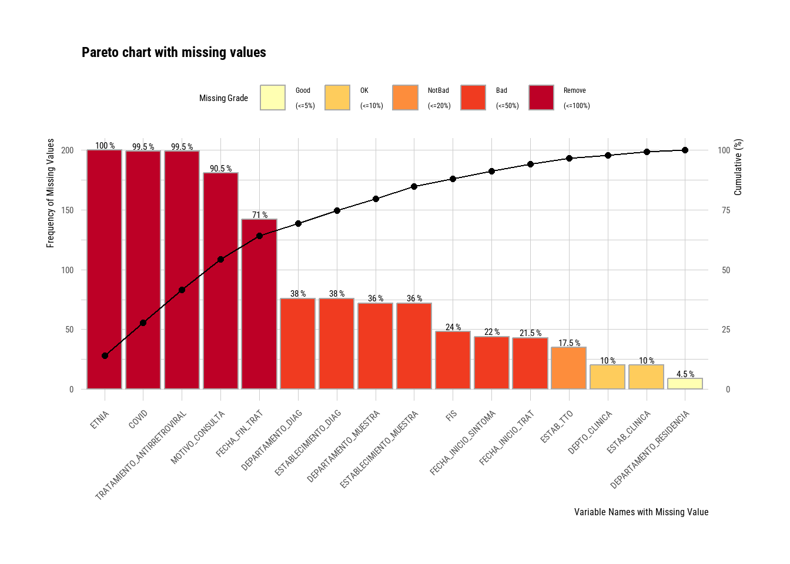
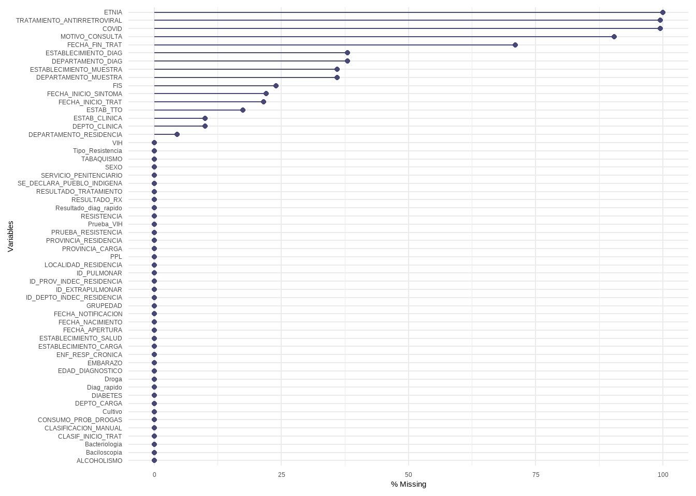
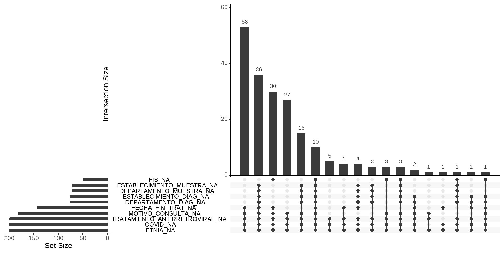
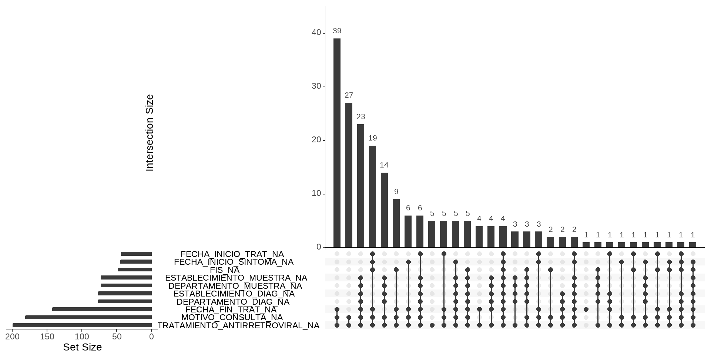

datos <- datos |> mutate(edad_na = is.na(edad))Datos ausentes (missing)
¿Por qué importan los datos ausentes?
Cuando trabajamos con datos reales, los valores ausentes o faltantes (conocidos en inglés como missing - NA en R), son más que un inconveniente técnico y lo que hagamos con ellos representan decisiones analíticas con consecuencias concretas sobre la validez de las estimaciones. Ignorarlos o tratarlos de forma descuidada puede introducir sesgo de selección, alterar la representatividad de la muestra e implicar supuestos implícitos sobre el proceso que generó los datos.
Por eso, antes de continuar con el análisis, modelar o graficar, es indispensable entender qué está pasando con los valores ausentes. Tratar los NA no es simplemente “rellenar huecos” u omitirlos sino preguntarse qué dicen esos huecos sobre el proceso que produjo los datos, es decir, si existe un mecanismo de ausencia subyacente.
Contexto para la toma de decisiones
Antes de definir cómo proceder frente a valores ausentes, es necesario contextualizar cada caso y preguntarse por qué esa información no está presente en la tabla de datos.
Un dato aislado rara vez es interpretable por sí mismo, su sentido suele estar anclado en el proceso de recolección y registro. En este punto, los metadatos asociados a la tabla de datos (por ejemplo, el diccionario de datos) resultan fundamentales, ya que permiten evaluar si la ausencia responde a errores de medición o carga —lo que podría justificar su corrección o exclusión, siempre debidamente documentada— o si, por el contrario, es inherente al fenómeno en estudio, en cuyo caso eliminarla implicaría perder información relevante.
La mejor solución para el manejo de datos ausentes es prevenir su aparición. Esto supone fortalecer los procesos de recolección y carga de datos, minimizando la pérdida de información desde el origen.
Sin embargo, en la práctica, con frecuencia no es posible recuperar los datos faltantes. En esos escenarios, nuestro rol como analista consiste en procesar la información disponible y explicitar de manera transparente qué decisiones se adoptaron frente a los valores ausentes y bajo que supuestos.
Mecanismos de ausencia
Técnicamente se reconocen tres tipos de mecanismo, con implicancias muy distintas para el análisis:
MCAR — Missing Completely at Random (ausencia completamente aleatoria)
La probabilidad de que un dato falte no depende ni de las variables observadas ni del valor ausente en sí. El mecanismo es independiente de todo lo demás. Bajo MCAR, eliminar casos con datos faltantes no introduce sesgo en las estimaciones (medias, coeficientes de regresión, etc.), aunque sí reduce el tamaño muestral y la potencia estadística. En la práctica, asumir MCAR es cómodo pero raramente justificado con datos reales.
MAR — Missing at Random (ausencia dependiente de lo observado)
La ausencia depende de las variables observadas, pero no del valor que falta, una vez que se condiciona en esas variables. En este caso, ignorar el patrón de ausencia y eliminar filas puede introducir sesgo, ya que la estructura de covariables estará desbalanceada entre los casos observados y los ausentes.
Supongamos, por ejemplo, que tenemos la variable nivel de colesterol con valores faltantes y la edad de la persona que está completa. Existe un escenario posible de mecanismo que puede explicarse en que las personas más jóvenes tienen menos probabilidad de hacerse un análisis y ello explica los NA en colesterol.
Entonces en MAR, los datos no están simplemente “faltando al azar” en sentido coloquial, sino “al azar condicionalmente a lo observado”.
MNAR — Missing Not at Random (ausencia dependiente del valor faltante)
La ausencia depende del propio valor no observado. Es el caso más problemático: no se resuelve con técnicas estándar de imputación. Requiere modelos explícitos del mecanismo de no respuesta, análisis de sensibilidad o información externa.
Un ejemplo para esta situación la tenemos en suponer un estudio poblacional sobre el consumo de alcohol y que parte de los participantes no responda a la pregunta. Es plausible que las personas con consumos más altos tengan mayor probabilidad de no responder (por estigma, deseabilidad social o temor a consecuencias).
Los NA también son información
El patrón de ausencia puede ser en sí mismo predictivo. En epidemiología, por ejemplo, el hecho de que un dato no esté registrado rara vez es fortuito y suele ser una señal sistemática asociada a características del paciente, del sistema de registro o del contexto clínico. Crear un indicador binario de “dato faltante” puede capturar mecanismos de comportamiento relevantes como la no respuesta, el abandono o la ocultación deliberada:
Este indicador no reemplaza la imputación, pero puede ser útil como variable adicional en modelos o para explorar el mecanismo de ausencia.
El error más común: eliminar filas con al menos un NA
La eliminación masiva de observaciones con datos ausentes es una forma de sesgo de selección.
Cuando una tabla tiene muchos NA, eliminar todas las filas incompletas equivale a redefinir silenciosamente la población de estudio: ya no se trabaja con “todos los individuos”, sino con “los individuos con datos completos”.
Si la completitud de los datos está asociada a variables relevantes, la muestra resultante deja de representar a la población objetivo, y el modelo puede ajustarse a una subpoblación diferente.
Las consecuencias concretas son: alteración de la composición de la muestra, distorsión de las asociaciones estimadas y sesgo en medidas de interés como OR o RR.
Por ejemplo, si los pacientes más graves tienen mayor cantidad de datos ausentes y se los elimina del análisis, se subestima el riesgo real en la población.
Limitaciones de la imputación simple
Un método frecuente consiste en reemplazar los NA por un valor resumen de la distribución (media o mediana). Sin embargo, la imputación con la media no es “gratuita” sino que modifica la estructura de los datos de manera que reduce artificialmente la variabilidad, debilita las correlaciones entre variables, sesga los coeficientes estimados y genera intervalos de confianza artificialmente estrechos.
En definitiva, se introducen observaciones deterministas que nunca existieron.
Métodos avanzados
La imputación avanzada es un campo extenso que excede los objetivos de esta cursada, pero mencionaremos su existencia. Las técnicas más utilizadas son:
Imputación múltiple (paquetes de R mice, Amelia): genera varias versiones del conjunto de datos con distintas imputaciones plausibles y combina los resultados mediante reglas estadísticas formales, produciendo estimaciones que incorporan la incertidumbre sobre los valores faltantes.
Modelos bayesianos: permiten incorporar esa incertidumbre de forma natural dentro del propio modelo de análisis.
Machine learning: algunos algoritmos (como los basados en árboles -random forest-) manejan NA de forma nativa o mediante imputación por proximidad entre observaciones similares.
Estos métodos no eliminan la necesidad de reflexionar sobre el mecanismo de ausencia (lo hacen más explícito) y, en algunos casos, permiten modelarlo directamente. Ninguno de ellos es una solución automática y todos requieren decisiones informadas sobre el contexto y los datos.
Detectar observaciones incompletas en R
El lenguaje R gestiona a los datos perdidos mediante el valor especial reservado NA de Not Available (No disponible).
En principio, sólo vamos a enfocarnos en como podemos utilizar algunas funciones del lenguaje para detectarlos y contabilizarlos. A partir de su identificación decidiremos que hacer con ellos, dependiendo de su cantidad y extensión, es decir, si los valores faltantes son la mayoría de una variable o la mayoría de una observación o bien si representan la falta de respuesta de una pregunta, con lo cual convenga etiquetarlos.
Una manera de abordar esta tarea con R base para una variables es hacer la sumatoria de valores NA, usando la función de identificación is.na().
Para ejemplificar, tomamos una tabla de datos de vigilancia con 200 observaciones y 56 variables.
datos |>
summarise(Cantidad_NA = sum(is.na(FECHA_FIN_TRAT)))# A tibble: 1 × 1
Cantidad_NA
<int>
1 142La consulta dice que hay 142 observaciones vacías en la variable FECHA_FIN_TRAT. Lo malo es que debemos hacer esta tarea variable por variable, lo que resulta muy trabajoso.
También la función summary() aplicada sobre el dataframe completo informa la cantidad de NA de variables cuantitativas, lógicas y fecha, pero no lo hace con las de tipo caracter.
summary(datos) SEXO FECHA_NACIMIENTO EDAD_DIAGNOSTICO
Length:200 Min. :1934-12-13 00:00:00 Min. : 0.00
Class :character 1st Qu.:1973-11-06 12:00:00 1st Qu.:23.00
Mode :character Median :1989-07-27 00:00:00 Median :33.00
Mean :1985-12-04 18:14:24 Mean :37.02
3rd Qu.:1999-11-17 12:00:00 3rd Qu.:49.00
Max. :2023-05-05 00:00:00 Max. :88.00
GRUPEDAD PROVINCIA_RESIDENCIA ID_PROV_INDEC_RESIDENCIA
Length:200 Length:200 Length:200
Class :character Class :character Class :character
Mode :character Mode :character Mode :character
DEPARTAMENTO_RESIDENCIA ID_DEPTO_INDEC_RESIDENCIA LOCALIDAD_RESIDENCIA
Length:200 Length:200 Length:200
Class :character Class :character Class :character
Mode :character Mode :character Mode :character
ESTABLECIMIENTO_SALUD ESTABLECIMIENTO_CARGA PROVINCIA_CARGA
Length:200 Length:200 Length:200
Class :character Class :character Class :character
Mode :character Mode :character Mode :character
DEPTO_CARGA ESTAB_CLINICA DEPTO_CLINICA PPL
Length:200 Length:200 Length:200 Length:200
Class :character Class :character Class :character Class :character
Mode :character Mode :character Mode :character Mode :character
SERVICIO_PENITENCIARIO FECHA_APERTURA
Length:200 Min. :2021-09-20 00:00:00
Class :character 1st Qu.:2023-04-12 18:00:00
Mode :character Median :2023-07-16 00:00:00
Mean :2023-07-14 09:07:12
3rd Qu.:2023-10-18 12:00:00
Max. :2024-04-18 00:00:00
FECHA_NOTIFICACION MOTIVO_CONSULTA CLASIFICACION_MANUAL
Min. :2023-01-03 00:00:00 Length:200 Length:200
1st Qu.:2023-04-03 12:00:00 Class :character Class :character
Median :2023-07-03 00:00:00 Mode :character Mode :character
Mean :2023-07-01 12:36:00
3rd Qu.:2023-10-03 00:00:00
Max. :2023-12-27 00:00:00
CLASIF_INICIO_TRAT ID_PULMONAR FIS
Length:200 Length:200 Min. :2020-12-20 00:00:00
Class :character Class :character 1st Qu.:2023-02-20 00:00:00
Mode :character Mode :character Median :2023-05-12 12:00:00
Mean :2023-05-10 05:22:06
3rd Qu.:2023-08-09 18:00:00
Max. :2023-12-21 00:00:00
NA's :48
ID_EXTRAPULMONAR FECHA_INICIO_SINTOMA RESULTADO_RX
Length:200 Min. :2022-08-15 00:00:00 Length:200
Class :character 1st Qu.:2023-03-01 00:00:00 Class :character
Mode :character Median :2023-05-17 12:00:00 Mode :character
Mean :2023-05-28 01:50:46
3rd Qu.:2023-08-09 00:00:00
Max. :2023-12-26 00:00:00
NA's :44
Bacteriologia Baciloscopia Cultivo PRUEBA_RESISTENCIA
Length:200 Length:200 Length:200 Length:200
Class :character Class :character Class :character Class :character
Mode :character Mode :character Mode :character Mode :character
RESISTENCIA Droga Tipo_Resistencia
Length:200 Length:200 Length:200
Class :character Class :character Class :character
Mode :character Mode :character Mode :character
ESTABLECIMIENTO_MUESTRA DEPARTAMENTO_MUESTRA ESTABLECIMIENTO_DIAG
Length:200 Length:200 Length:200
Class :character Class :character Class :character
Mode :character Mode :character Mode :character
DEPARTAMENTO_DIAG Prueba_VIH VIH
Length:200 Length:200 Length:200
Class :character Class :character Class :character
Mode :character Mode :character Mode :character
TRATAMIENTO_ANTIRRETROVIRAL Diag_rapido Resultado_diag_rapido
Length:200 Length:200 Length:200
Class :character Class :character Class :character
Mode :character Mode :character Mode :character
EMBARAZO DIABETES CONSUMO_PROB_DROGAS ENF_RESP_CRONICA
Length:200 Length:200 Length:200 Length:200
Class :character Class :character Class :character Class :character
Mode :character Mode :character Mode :character Mode :character
COVID SE_DECLARA_PUEBLO_INDIGENA ETNIA
Length:200 Length:200 Mode:logical
Class :character Class :character NA's:200
Mode :character Mode :character
TABAQUISMO ALCOHOLISMO ESTAB_TTO
Length:200 Length:200 Length:200
Class :character Class :character Class :character
Mode :character Mode :character Mode :character
FECHA_INICIO_TRAT FECHA_FIN_TRAT
Min. :2023-01-03 00:00:00 Min. :2023-03-09 00:00:00
1st Qu.:2023-03-20 00:00:00 1st Qu.:2023-08-21 00:00:00
Median :2023-07-02 00:00:00 Median :2023-10-23 12:00:00
Mean :2023-06-28 21:42:25 Mean :2023-10-23 02:04:08
3rd Qu.:2023-10-05 00:00:00 3rd Qu.:2024-01-11 12:00:00
Max. :2024-01-08 00:00:00 Max. :2024-04-05 00:00:00
NA's :43 NA's :142
RESULTADO_TRATAMIENTO
Length:200
Class :character
Mode :character
Más completo y en una sola línea la función find_na() del paquete dlookr muestra el porcentaje de valores perdidos en todas las variables de una tabla de datos y se complementa con el gráfico de barras de pareto plot_na_pareto().
library(dlookr)
find_na(datos, rate = T) # argumento rate = T muestra % de valores NA SEXO FECHA_NACIMIENTO
0.0 0.0
EDAD_DIAGNOSTICO GRUPEDAD
0.0 0.0
PROVINCIA_RESIDENCIA ID_PROV_INDEC_RESIDENCIA
0.0 0.0
DEPARTAMENTO_RESIDENCIA ID_DEPTO_INDEC_RESIDENCIA
4.5 0.0
LOCALIDAD_RESIDENCIA ESTABLECIMIENTO_SALUD
0.0 0.0
ESTABLECIMIENTO_CARGA PROVINCIA_CARGA
0.0 0.0
DEPTO_CARGA ESTAB_CLINICA
0.0 10.0
DEPTO_CLINICA PPL
10.0 0.0
SERVICIO_PENITENCIARIO FECHA_APERTURA
0.0 0.0
FECHA_NOTIFICACION MOTIVO_CONSULTA
0.0 90.5
CLASIFICACION_MANUAL CLASIF_INICIO_TRAT
0.0 0.0
ID_PULMONAR FIS
0.0 24.0
ID_EXTRAPULMONAR FECHA_INICIO_SINTOMA
0.0 22.0
RESULTADO_RX Bacteriologia
0.0 0.0
Baciloscopia Cultivo
0.0 0.0
PRUEBA_RESISTENCIA RESISTENCIA
0.0 0.0
Droga Tipo_Resistencia
0.0 0.0
ESTABLECIMIENTO_MUESTRA DEPARTAMENTO_MUESTRA
36.0 36.0
ESTABLECIMIENTO_DIAG DEPARTAMENTO_DIAG
38.0 38.0
Prueba_VIH VIH
0.0 0.0
TRATAMIENTO_ANTIRRETROVIRAL Diag_rapido
99.5 0.0
Resultado_diag_rapido EMBARAZO
0.0 0.0
DIABETES CONSUMO_PROB_DROGAS
0.0 0.0
ENF_RESP_CRONICA COVID
0.0 99.5
SE_DECLARA_PUEBLO_INDIGENA ETNIA
0.0 100.0
TABAQUISMO ALCOHOLISMO
0.0 0.0
ESTAB_TTO FECHA_INICIO_TRAT
17.5 21.5
FECHA_FIN_TRAT RESULTADO_TRATAMIENTO
71.0 0.0 plot_na_pareto(datos,
only_na = T) # argumento only_na = T muestra variables solo con algún valor NA 
Gestión de NA’s con naniar
El paquete naniar es un paquete que reúne funciones diseñadas para el manejo de valores ausentes pensado para una gestión completa.
library(naniar)Sus caracteristicas generales son:
Proporciona funciones analíticas y visuales de detección y gestión
Es compatible con el mundo “tidy” de tidyverse
Aborda las relaciones o estructura de la falta de datos.
Posibilita el trabajo de imputación (no tratado en este curso)
De las muchas funciones que tiene el paquete seleccionamos algunas para mostrar que son muy útiles para una tarea básica.
La función miss_var_summary() proporciona un resumen sobre los valores NA en cada variable del dataframe similar a find_na() que vimos anterioremente pero con una salida en forma de tabla y un recento absoluto, además de porcentual.
miss_var_summary(datos)# A tibble: 56 × 3
variable n_miss pct_miss
<chr> <int> <num>
1 ETNIA 200 100
2 TRATAMIENTO_ANTIRRETROVIRAL 199 99.5
3 COVID 199 99.5
4 MOTIVO_CONSULTA 181 90.5
5 FECHA_FIN_TRAT 142 71
6 ESTABLECIMIENTO_DIAG 76 38
7 DEPARTAMENTO_DIAG 76 38
8 ESTABLECIMIENTO_MUESTRA 72 36
9 DEPARTAMENTO_MUESTRA 72 36
10 FIS 48 24
# ℹ 46 more rowsPor el lado gráfico, ofrece la función gg_miss_var() que representa la información de la tabla anterior pero a través de un gráfico lollipop horizontal de tipo ggplot2.
gg_miss_var(datos,
show_pct = T) # muestra valores en porcentajes
Hay otra viaulización muy interesante porque muestra las relaciones de los valores ausentes de las variables cuya función se llama gg_miss_upset() y genera un gráfico Upset en función de la existencia de valores NA.
gg_miss_upset(datos) 
Por defecto, construye el gráfico tomando las primeras 10 variables de la tabla de datos con valores NA de forma decreciente. Esto se puede modificar cambiando el argumentosnset =.
Tiene dos entradas para su lectura. En la parte inferior izquierda nos muestra los nombres de las variables con valores NA ordenadas de menor a mayor medida en una escala absoluta. El gráfico de barras principal, ordenado de forma predeterminada de mayor a menor, informa sobre las cantidades absolutas de valores NA de las combinaciones que aperecen debajo del eje x del gráfico.
Por ejemplo, la variable ETNIA tiene todos sus observaciones como NA y la variable COVID casi lo mismo, mientras que la variable FIS cerca de 50.
Podemos eliminar del gráfico a esas dos variables con casi todos los valores NA, usando formas de tidyverse previas dado que las funciones de naniar son compatibles.
datos |>
select(-ETNIA, -COVID) |>
gg_miss_upset() 
Al quitar esas dos variables, aparecen dos nuevas con cantidades menores de NA que FIS (FECHA_INICIO_TRAT y FECHA_INICIO_SINTOMA), es decir siguen siendo 10 por defecto.
Si miramos los datos faltantes con estructura notamos que la combinación más frecuente de NA combinados es FECHA_FIN_TRAT, MOTIVO_CONSULTA y TRATAMIENTO_ANTIRETROVIRAL con 39 observaciones a las que le faltan valores en las tres variables simultáneamente.
Reemplazo de valores
El paquete tiene además dos funciones de reemplazo que funcionan como herramientas antagónicas.
replace_with_na() reemplaza valores o etiquetas específicas con valores NA y replace_na_with() hace lo contrario, reemplaza valores NA con valores específicos, como “Sin dato” por ejemplo.
La primera función trabaja sobre el dataframe completo adignando valores NA en la categoría o valor que le indiquemos.
Por ejemplo, la variable ID_PROV_INDEC_RESIDENCIA no tiene valores perdidos pero si hay una categoría/código desconocido (“00”), entonces podemos decirle que ese código sea NA.
datos |>
summarise(Cantidad_NA = sum(is.na(ID_PROV_INDEC_RESIDENCIA)))# A tibble: 1 × 1
Cantidad_NA
<int>
1 0datos |>
replace_with_na(replace = list(ID_PROV_INDEC_RESIDENCIA = "00")) |>
summarise(Cantidad_NA = sum(is.na(ID_PROV_INDEC_RESIDENCIA)))# A tibble: 1 × 1
Cantidad_NA
<int>
1 2replace_na_with() etiqueta valores faltantes con categorías definidas que serán tenidas en cuenta a la hora de hacer tablas u otras operaciones. Esta función se utiliza dentro de mutate() del tidyverse.
La variable MOTIVO_CONSULTA tiene 181 valores NA que serán etiquetados como “Sin dato” de esta forma:
datos |>
count(MOTIVO_CONSULTA)# A tibble: 4 × 2
MOTIVO_CONSULTA n
<chr> <int>
1 Contacto 2
2 Examen de Salud 1
3 Sintomático Respiratorio 16
4 <NA> 181datos |>
mutate(MOTIVO_CONSULTA = replace_na_with(MOTIVO_CONSULTA,
"Sin dato")) |>
count(MOTIVO_CONSULTA)# A tibble: 4 × 2
MOTIVO_CONSULTA n
<chr> <int>
1 Contacto 2
2 Examen de Salud 1
3 Sin dato 181
4 Sintomático Respiratorio 16Eliminación de valores NA
Cuando decidimos eliminar valores NA de alguna variable, salvo que se quite la variable entera, tenemos que tener en cuenta que perdemos la observación completa, incluso valores válidos que se encuentran en otras variables.
R base tiene una función llamada na.omit() que omite toda observación donde al menos haya un solo NA en alguna variable.
na.omit(datos)# A tibble: 0 × 56
# ℹ 56 variables: SEXO <chr>, FECHA_NACIMIENTO <dttm>, EDAD_DIAGNOSTICO <dbl>,
# GRUPEDAD <chr>, PROVINCIA_RESIDENCIA <chr>, ID_PROV_INDEC_RESIDENCIA <chr>,
# DEPARTAMENTO_RESIDENCIA <chr>, ID_DEPTO_INDEC_RESIDENCIA <chr>,
# LOCALIDAD_RESIDENCIA <chr>, ESTABLECIMIENTO_SALUD <chr>,
# ESTABLECIMIENTO_CARGA <chr>, PROVINCIA_CARGA <chr>, DEPTO_CARGA <chr>,
# ESTAB_CLINICA <chr>, DEPTO_CLINICA <chr>, PPL <chr>,
# SERVICIO_PENITENCIARIO <chr>, FECHA_APERTURA <dttm>, …Aplicar esta función sobre el dataframe datos produce que no quede ninguna observación, dado que vimos que la variable ETNIA tenía sus doscientos valores vacíos.
Una función superadora es drop_na() de tidyr que pertenece a tidyverse, porque omite observaciones que tengan variables que definamos, por ejemplo:
datos |>
drop_na(ETNIA)# A tibble: 0 × 56
# ℹ 56 variables: SEXO <chr>, FECHA_NACIMIENTO <dttm>, EDAD_DIAGNOSTICO <dbl>,
# GRUPEDAD <chr>, PROVINCIA_RESIDENCIA <chr>, ID_PROV_INDEC_RESIDENCIA <chr>,
# DEPARTAMENTO_RESIDENCIA <chr>, ID_DEPTO_INDEC_RESIDENCIA <chr>,
# LOCALIDAD_RESIDENCIA <chr>, ESTABLECIMIENTO_SALUD <chr>,
# ESTABLECIMIENTO_CARGA <chr>, PROVINCIA_CARGA <chr>, DEPTO_CARGA <chr>,
# ESTAB_CLINICA <chr>, DEPTO_CLINICA <chr>, PPL <chr>,
# SERVICIO_PENITENCIARIO <chr>, FECHA_APERTURA <dttm>, …datos |>
drop_na(FIS)# A tibble: 152 × 56
SEXO FECHA_NACIMIENTO EDAD_DIAGNOSTICO GRUPEDAD PROVINCIA_RESIDENCIA
<chr> <dttm> <dbl> <chr> <chr>
1 M 1948-06-22 00:00:00 74 70-74 Tierra del Fuego
2 F 1981-06-20 00:00:00 41 40-44 Buenos Aires
3 F 1989-03-30 00:00:00 33 30-34 Buenos Aires
4 M 2006-11-17 00:00:00 16 15-19 Chaco
5 M 1993-06-02 00:00:00 29 25-29 Jujuy
6 M 1989-04-08 00:00:00 33 30-34 Buenos Aires
7 F 1977-07-30 00:00:00 45 45-49 Buenos Aires
8 F 2008-01-10 00:00:00 15 15-19 Chaco
9 M 1987-11-27 00:00:00 35 35-39 Buenos Aires
10 F 2002-12-21 00:00:00 20 20-24 Buenos Aires
# ℹ 142 more rows
# ℹ 51 more variables: ID_PROV_INDEC_RESIDENCIA <chr>,
# DEPARTAMENTO_RESIDENCIA <chr>, ID_DEPTO_INDEC_RESIDENCIA <chr>,
# LOCALIDAD_RESIDENCIA <chr>, ESTABLECIMIENTO_SALUD <chr>,
# ESTABLECIMIENTO_CARGA <chr>, PROVINCIA_CARGA <chr>, DEPTO_CARGA <chr>,
# ESTAB_CLINICA <chr>, DEPTO_CLINICA <chr>, PPL <chr>,
# SERVICIO_PENITENCIARIO <chr>, FECHA_APERTURA <dttm>, …En el ejemplo anterior aplicamos la función sobre la variable ETNIA y FIS, en el primer caso omite todas las observaciones y en el segundo caso 48 observaciones, mostrando las 152 restantes sin NA en la variable.
Por último, debemos saber que eliminar observaciones por valores faltantes reduce la potencia de cualquier test de hipótesis o modelo que hagamos porque se reduce el tamaño de la muestra.
| Acción | Herramienta en R |
|---|---|
| Cuantificar NA por variable | find_na() (dlookr), miss_var_summary() (naniar) |
| Visualizar frecuencia de NA | plot_na_pareto() (dlookr), gg_miss_var() (naniar) |
| Explorar combinaciones de NA | gg_miss_upset() (naniar) |
| Recodificar valores como NA | replace_with_na() (naniar) |
| Etiquetar NA como categoría | replace_na_with() (naniar) |
| Eliminar observaciones incompletas | drop_na() (tidyr) |
| Justificar y reportar la decisión | — |
Conclusión
No existe un tratamiento “neutro” de los datos ausentes. Cada decisión implica asumir algo sobre cómo se generaron los datos, qué queda dentro del análisis y qué relaciones se están estimando. La transparencia metodológica es parte del rigor analítico, por lo que toda decisión debe tomarse de forma consciente y reportarse explícitamente.